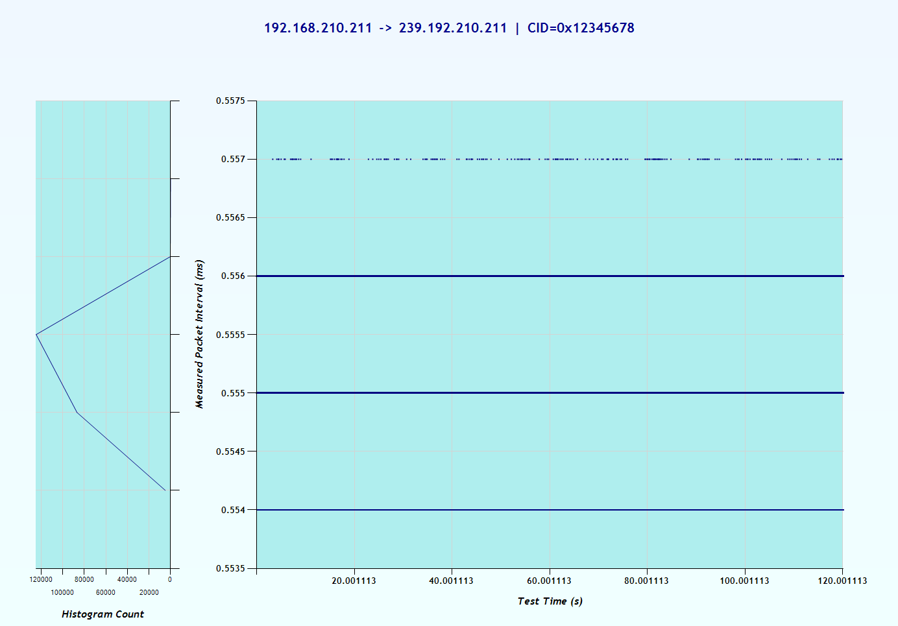

IENetP Test Tool Report
This report was automatically generated by the IENetP Test Tool. For more information about the software, please visit the IENetP SourceForge Page.
Information and Settings
General Information
| Description | Value |
| Capture File: | ENIP_Class1_120sec.enc |
| Report Generated: | Friday, October 19, 2012 @ 4:08:21 PM |
Additional Information
| Description | Value |
| Test Name: | |
| Test Description: | |
| Test Comment: | |
| Device Name: | |
| Device Manufacturer: | |
| Device Description: | |
| Device Model: | |
| Device Serial Number: | |
| Device Firmware Version: | |
| Device Comment: | |
Results
Jitter Statistics
| Statistic | Value | Percentage |
| Mean: | 0.556 ms | |
| Minimum: | 0.554 ms | 0.36% |
| Maximum: | 0.557 ms | 0.18% |
| Standard Deviation: | 0.001 ms | 0.179856% |
Jitter Graph

Process Log
10/19/2012 4:07:12 PM: Validate Capture File: Started.
10/19/2012 4:07:14 PM: Validate Capture File: 216302 packets
10/19/2012 4:07:14 PM: Validate Capture File: Completed in 2.078125 s
10/19/2012 4:07:14 PM: Process Capture File: Started.
10/19/2012 4:07:48 PM: Process Capture File: Completed in 34.171875 s
10/19/2012 4:07:48 PM: Process Wireshark Output: Started.
10/19/2012 4:07:54 PM: Process Wireshark Output: 216302 filtered packets
10/19/2012 4:08:03 PM: Process Wireshark Output: 1 dataset
10/19/2012 4:08:03 PM: Process Wireshark Output: Completed in 14.984375 s
10/19/2012 4:08:03 PM: Build Datasets: Started.
10/19/2012 4:08:04 PM: Build Datasets: Completed in 0.859375 s